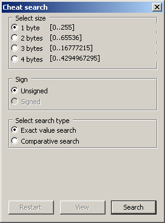

5.3 Cheating
This is not using any “hidden” button combinations/activation conditions to allow for a different mode of operation to normal play but actually editing how the game works. Of all the areas most likely to sit slightly aside from ROM hacking it is cheating but an appreciation for how cheats work is very desirable when first learning about some of the game logic side of hacking and certainly as a lead in for assembly.
Classically there were two types in RAM codes (often called action replay or gameshark depending where you are in the world) and ROM codes (often called game genie).
RAM codes acted upon the game memory where ROM codes adapted read requests for the ROM image to whatever the code wanted.
RAM codes were often considered simpler in nature, this is not really a fair assessment but due to the overwhelmingly large amount of simple codes it kind of stuck. Equally ROM codes were often able to do some very far reaching changes, changes that would have been extremely hard to do via RAM editing, and were slightly harder to make, and are also not as common.
As ROM/game genie codes operate on the ROM they can be patched in very simply to the ROM itself, RAM codes need a device/emulator with support for them or a program to edit the cheat in or hook the game code to add a small cheat engine. Having code run on top of the existing code is something which is not really viable for older systems, especially not in a somewhat generic/automated tool type manner. The GBA and DS do feature such things though with GBAATM and DSATM being the main two programs for the GBA and DS respectively, the GBA does feature other tools like GABsharky but most of the earlier efforts have been overshadowed/supplanted by GBAATM. The classical lines were blurred in recent years as the game genies turned to action replay style codes and action replay devices also took up save editing and save injection for various consoles, on top of that DS ROM images store their game binary in the RAM (they have to as the DS game cards are not accessible in ram) so some of the better cheat makers used action replay codes to edit the binary in ram to great effect.
There are many types of cheat code and devices with different implementations, this guide will probably shy away from going into depth but in general it is broken down to three components (and usually encoded in the following order)
the type of code (constant writes, conditional writes, boolean operation and some more exotic types).
the memory address
the payload if any is necessary
The main reason for covering this is understanding how cheats work and how they work with the system often leads to a deeper understanding of how the system works in general and provides a nice in for those wanting to start to learn how to code in assembly (the type of operation, location and payload concept will return there).
Useful links Enhacklopedia
5.3.1 General cheat making
There are many ways you can make cheats but the first port of call is usually a memory scanner of some form. These allow you to scan the memory before dropping back into the game, changing something and scanning again until you either get it down to the exact value or a small enough list that you can try them all by hand.
You have several scanning options available to you including
- Value search (equal or not equal) - if you know the value of your health or something you can search for it. Does not always work but worth a go as a first pass.
- Greater than/less than search. Here you can search for something greater or less than a value or find all results different to a given value.
- Fuzzy search. Here you can note everything with an eye to coming back later to see what has changed. Can be combined with greater or less than most of the time as well. This is quite useful when you have a health or timer bar without a direct display of the value to be searched for.
- Range search. Not always available and doable if you think about it with greater than and less than this quite literally searches for values within a given range.
Exotic codes and terms Various cheat devices allow for some quite custom and far reaching codes to be made over devices from competitors. Some of these are to change the internal handling of the cheats but many more can have quite far reaching effects. First though some terms that often come up
- Slide codes. A technique used to generate codes to do the same change to multiple locations at once, usually used if you have something like 30 troops, each with their own health value and ammo value and you do not want to use 30 codes.
- Master code. More associated with game genies where they usually bypass protection and for cheat devices that needed to be set up to work on certain ROM images.
- Slowdown. Covered later but some cheat devices allow you to slow a game down by flooding the CPU.
- Joker code. Codes used when using buttons to activate cheats.
5.3.2 GBA cheat making
VBA has a basic cheat option which should be available in nearly all versions (notably the VBA-SDL-H version does not although if you really wanted you could use its debugging abilities to do something instead) and the brand new window of the basic VBA cheat options looks like.
PIC
VBA-H has some slightly expanded options in cheats and elsewhere.

PIC
Regardless of the version most of it is fairly obvious if you have a basic understanding of the basic ideas of cheats and value representation with hexadecimal.
Still
- Search type - Specific value allows you to enter a number in the old value section. Old value will search the previous results.
- Data size - 8 bits, 16 bits and 32 bits values will be looked at. Note that quite often things that appear as 8 or 16 bits at the start of the game (if you are only losing a few health at a time that might appear as an 8 bit value) the value might well use the full 32 bits by the time all is said and done.
- Compare type - pretty self explanatory. Not equal is useful if you are searching for something that might of changed but you are not sure how and for timers that might reset.
- Signed/Unsigned - does exactly what it says and allows you to search for signed or unsigned values.
- Enter value - only available when you have Specific value search selected.
- Update values - this updates original searches to their new values each search.
- Flag compare - (VBA H only)
- Differ By - (VBA H only) does exactly what it says and allows you do select a range of values to limit your results by (if you have only lost 7 health the change will probably not be a full value only capable of being represented by 32 bits)
- Range - (VBA H only) again does more or less what it implies and allows you to restrict a search to only include or not to include a range of values.
About the only thing it is lacking is a floating point search but those are tricky and float values are rarely used on the GBA (not to mention would probably come up on a not equal search). Also lacking are things like bitwise, Boolean and mathematical functions but if you need those VBA-SDL-H is where you would look.
5.3.3 DS cheat making
This varies a bit depending upon the person doing the cheat making. Desmume has some cheat/memory manipulation abilities but many will use tools like HasteDS and renegade64 or more general purpose tools to hook into emulators and provide similar abilities. Many more will use tools like Datel’s trainer toolkit which has fairly extensive debugging abilities and even flash carts like the Supercard DSTWO and iSmart MM will have minor cheat making options although their search and functionality is somewhat less than a proper tool they can still be used for basic cheats.
Desmume Should be available in all versions of the program (no need for the dev version), for Linux you may need a given version.
\[note 2014 update\] This is a somewhat older version, the newer builds have a significantly improved cheat engine.
Main window, exact and comparative search


It is split across a few screens although for the most part it is fairly obvious once more.
Select size - selects for values spread across a given number of bytes. Note once more that low values might be using larger sizes.
Sign - unsigned or signed.
Select search type - exact value searches for a given value and comparative search allows you to search for anything (life bars and other such things without exact values).
On the comparative search > ,<, = and != have their usual means of greater than, less than, equals and does not equal.
Perhaps counter intuitively you have to close the cheat window to get the game to run again before jumping back to the search and refining it.
Emuhaste Emuhaste project homepage
Realistically you will probably only use it with desmume but none the less it is a powerful cheat searching engine and includes the ability to dump memory.

PIC
Basic usage is after you set up the ini file to run the emulator, press snap process. You do not need to search for a value to begin.
Inc(rease) searches for a value that increased in size
Dec(rease) searched for a value that decreased in size
Diff(erence) searches for a value that changed in size (up or down)
Equ(als) searches for a value that remained the same.
Data length allows you to search by values of a given length. Float search is not much use on the DS but it is there and sort of works.
Set search range unlike the others is not a value limiting search but an address range.
The file dump “pulldown” menu allows you to dump the DS main ram which can be used to help find pointer codes.
In the param & string search box you can type the value to find (up to 255 long which is more than enough for most uses). This however has a series of options you can use
S in front of numbers will mean they are treated as decimal
R at the start of the entry will swap endianness
$ will allow you to search for a string.
< will allow you to restrict a search to less than the value you put on the other side (<S40 will mean only values under 40 decimal will be considered).
> will allow you to restrict a search to values greater than the value (>S40 will mean 39 decimal and down will not appear)
Innnnnnnn-nnnnnnnn will restrict to an address range.
Basic difference searching is available by using plus and minus signs to specify the change.
As of 4.00 an autotrigger search is available. Here it will trigger search if a certain memory value is changed according to the command
Format is address:hex you are searching for:command with multiple commands being available if you separate with a comma. Commands as follows
EQ - equal to
NE - not equal to
GT - greater than
LE - less than
MS - multi-search
There was a previous version of the tool known as hasteDS that stuck around for a while as the rewrite to emuhaste was missing some features but that should now be a thing of the past.
no\(gba As the developer version of no\)gba features a full memory editor it too can be used for cheat making. However it lacks the more in depth cheat making features seen elsewhere, this is fine though as various versions are widely supported by other programs which also support the standard version.
Others Most of the cheating tools are more or less a specialised class of memory viewer of which there are many (several of the suggested hex editors have the ability to read process memory)
Artmoney Artmoney homepage
A more general editor but one that found a fair audience in game hacking circles owing to some more cheat making specific features.
RenegadeEX Filetrip download
A general program also geared towards editing with support for several emulators but only no\(gba for the DS (although it does support several GBA emulators). The previous incarnation known as Renegade64 was also a no\)gba specific program but for a long time far more stable than HasteDS and emuhaste.

PIC
Emucheat Emucheat homepage
Another no$gba oriented program and for a while somewhat more advanced than the other options so it became fairly popular among those seeking to make more advanced cheats or cut down on the unnecessary
Crystaltile2 Not so much for cheats but can interface with no$gba to retrieve VRAM and WRAM data. Available under the “DS emulator” option in the file pulldown menu.
Datel’s Trainer Toolkit This one is actually something more than a memory viewer, here you have to use a trainer toolkit to connect to a live DS via a GBA slot at which point you can tap into the memory and edit from there.
5.3.4 Basic making of a cheat
Regardless of the tools or system it is intended for cheat making uses the same methods. To then end making an infinite life cheat for Summon Night Swordcraft Story 2 on the GBA

PIC

PIC
A couple of health was lost and the search button was pressed

PIC
A few more points of health was lost which made things better but still not there
PIC
The process was repeated a few more times

PIC
PIC
30608 decimal = 7790 hex so 8 bit was probably a bad choice but as the health was only going down by 1 it worked today.
This led to 0300060C so selecting that address and pressing add cheat
PIC
Adding a value of FFFF and a description so as not to forget when other cheats were made gives the end result as

PIC
5.3.5 Cheat prevention methods and frustrations
Such things often trouble ROM hackers as well owing to the way they work but either because of the way they are coded or because the developers wanted to lessen cheats some games work in such a way that the basic cheat creation method falls short. Additionally some games can be broken by the use of cheats on a less technical level; quite often in a RPG type game you will encounter a fight you are supposed to lose or you can unlock options that might be viable as far as the game code is concerned but the game itself was scripted in such a way that the rest of the story can no longer play out. On a more technical level timers can be used by many parts of the games to do things so holding them is not always feasible.
Probably the most basic version of this always on cheat problem is if a cheat is always on but for a time in the initial boot sequence the game will use the memory for something else (this is more troubling on the DS if you are doing something in the overlays that are designed to be swapped out of memory many times during the game) but that is usually solved either by hooking the game to use a button activator or similar, changing the nature of a cheat (especially when dealing with timers that the game might use elsewhere) or having a cheat engine that can turn cheats on at a given time. The rest of this section has some examples of techniques seen over the years and there is nothing stopping games from hybridising methods either.
Mirrored, encrypted, checked and calculated values Although all four are different techniques they work along similar principles
- Mirror values tend to mean the value is written in multiple locations (see also pointers below) and if one does not match up you can use the others or crash or something.
- Encrypted do as they say and turn a plain number into meaningless gibberish unless you can decrypt it (usually this is a very simple method of encryption like a plain XOR or a shift or something).
- Checked values. If you have four characters their total health might be 614 and you can store that which means if the sum total of character health is different something has gone wrong.
- Calculated values are arguably a subset of encrypted values but rather than say storing a health of 145 you instead take it from the maximum health of 255 and store 110. This can also be for helping with calculations.
Most of these are easy to work around as if you are searching for infinite health it does not matter if you have an infinite health of 7 or the maximum value for the most part17 so if you have a working set of values just force the game to use them always. If you do want to figure something out you tend to have to watch values that change at all rather than higher or lower and figure out the method used which is usually quite easily managed or dive into assembly probably guided or initially aimed by a basic cheat search.
Pointers In a DS game the pointers in the header which every DS can read points to the filesystem which points to a file which points to parts of the file which may point for further parts of the file and possibly further (rare but quite possible). There is nothing stopping ROMs from using similar methods and indeed several games have been seen to use these over the years which has several effects including cheats that only work some of the time, cheats that do not work at all (usually thanks to a combination of the previously mentioned methods), cheats that are impossible to find by basic methods (most cheating methods assume the value remains in the same location).
Workarounds include finding all the locations that can be pointed at (even with pointers many games will do it in a round robin fashion) and controlling the lot (a bit brute force but quite acceptable), you can try reading the pointer at a given point and reacting accordingly if your cheat engine is powerful enough and you can instead force the pointer to stick at one location and make sure that now fixed location gets edited.
Pointers within pointers are not only possible but seen on several occasions and there are occasionally games with proper memory management/allocation so holding “old” values is not always the best idea.
There are a few tools to handle pointers for cheats with the most notable one on the DS being Kenobi’s pointer tool which you feed memory dumps and the basic codes into to get the full codes out of (pointers and the initial cheats used to fix yours).
PIC
Another nice tool is available in Demonic722’s hacking toolkit.

PIC
The idea behind it should you have to go manual is in each game there will be an instruction or memory value addressing the location you are looking at for your cheats, find this place referencing the varying location and it is fairly easy going from there. It is easier to and indeed most tools want to use a couple of dumps from plays of the game that use the different locations (they are for the most part generated at runtime/boot/launch so it should just be a matter of reloading the game save but it is easy enough to test) for similar reasons that to doing multiple rounds of tests to narrow down the possibilities is when making basic cheats. Most of the time the pointer location is fixed so finding the thing that points at the would be cheat location will usually solve the problem although again pointers pointing to other pointers has been seen several times in the wild. Equally there is nothing stopping a game from calculating a pointer by adding a simple number to an address as per C style pointer arithmetic; technically this is pointer in a pointer but if the base value is used in several other places you might not be able to change it so easily.
Dual values Although this probably is covered by the basic cheat making methods and in the other things that make life harder it should be noted that some games can maintain a couple of values for what ostensibly should be a single piece of data. RPGs make good examples and a similar thing can be seen in some of the GBA Final Fantasy ports where values can be held say one for the life bar, one for the on screen value and another for the actual value used as a basis to form all the others. This gets especially fun when the values are not just display only and may effect what happens in the game for if you have maximum health according to the numbers you may not be able to use a potion but the internal health value means you will eventually die as you are losing health. Those which try to hold timers quite often get tripped up by this.
Stack/register values The ideas behind the terms are covered in later sections but alongside conventional memory there are two other areas known as the stack (which might well be part of memory but should not be considered as such) and registers which sit inside the CPU and in the case of the GBA/DS is the only thing the CPU can read directly within an instruction (naturally you can use the CPU to manipulate memory but it takes a separate instruction).
Here values can be put into a register and/or the stack as appropriate and referred to/operated upon repeatedly before being written back to the memory when all is said and done. There is the related idea of a function specific pointer where all the health, stats and such will be passed into a function for a given period (say a battle) and operated on there but this does not tend to happen on the GBA/DS but on more conventional systems (and especially with “safer” programming langauges) it happens all the time.
To this end if you want to edit things to do with it you have to find the resulting actions or actions that edit it and edit those instead as more than general memory registers and the stack rarely stay constant for long. As that is quite wordy and hard to visualise consider say the health of a character in a basic RPG: In the main overworld the character’s health matters relatively little or not at all (assume a game with no poison mechanic for the sake of this example) but in battle the health might be changing all the time so rather than write things to and from memory (a relatively slow process compared to the CPU itself) it will keep the health value inside the CPU memory and edit it all the time there instead making your manipulations of the regular memory all but pointless if you wanted infinite health in battle. Here instead you would find instructions that took from the health value and change them to nothing (or even add health) or find the instruction that triggers the death event if you run out of health and negate that there instead.
Similarly it was for slightly different reason (certain actions would only happen when patient health was low) the trainers and cheats for the DS game “Trauma Center” changed it so if you “missed” with your scalpel or similar the health would reset to full and you can do similar things to work around values held in registers. This also works for parts of memory that can change location and for things like overlays (small sections of code you can drop into a game to be replaced with another but keeping the bulk of the game code) that might not always be present at runtime.
5.3.6 Instruction editing cheating
Although assembly hacking discussion does not start in earnest until next section this is directly related to cheating and so quite useful to know about not to mention providing a direct link to more conventional assembly hacking. Some of the very first “trainers”18 for the DS that were not scene trainers attempted to hard patch action replay codes in various ways. This sort of editing is a useful skill to have and it generally revolves around editing the instruction(s) that ultimately serve change the value and slightly further down the line it covers how to do hook a binary to enable a similar effect but one that is more directly useful to a lot of assembly hacking which might need to change something but requires a larger instruction. It should be noted that for infinite lives type cheats there are many ways to die (think even on a basic platformer like NES mario you can run out of time, fall down a pit, get hit by an enemy and who knows if hazards and enemies are two different things) and games have long been seen to have many functions that will change the same value. Of course it can cut the other way and allow you to have infinite time in a level but the end of level time remaining to score function can still remove the time value that a basic hold this memory location would mess up.
Still going back to Summon Night 2
0300060C held the location for the life counter.
There are two options here
Disassemble the ROM and search for any instructions that look to deal with the value.
Run the game in a debugging emulator and wait for an instruction to deal with the value.
The former is a lot easier to deal with (it amounting to running a program and pressing search in the plain text that results) but it does not always work for various reasons like pointers (here we know it is not a pointer that governs it but the if pointers were there it could break it), calculated values/locations and more. The latter is not so difficult for a basic hack but it does require use of a debugging emulator which can take some thought compared to some of the techniques elsewhere in the document.
The latter option was chosen for this. Shortly before the first battle F11 (the VBA-SDL-h jump to debugging command) was pressed
PIC
A scary looking window if you do not know what is covered in the following sections but most of it means very little to this process, and even if it did it is not so bad if you try to work through what each section means. 0300060C is the cheat location and it is 32 bits or 4 bytes so to this end when 0300060C or any of the subsequent 4 bytes are written it needs to be known about or indeed a breakpoint on a write needs to be set.
bpw {address} {count}
bpw 0300060C 4
Typing c continues the program after it “breaks” and it took a few goes to get to the battle. Once in battle letting a few hits be landed and continuing each time
PIC
Here it is possible to observe the game logic
The first two numbers are where the instruction is running from and the next 4 hex characters are what the instruction is encoded as; if you noticed that the second were only 16 bits despite the GBA is a 32 bit console it is because the GBA (and DS) do have a 16 bit mode which it often uses called THUMB.
str r0, r4, #0x54
This means load the contents of at the location in r4 plus 54 hex (300060C is what it comes out as) into r0
cmp r1, #0x0
This means compare R1 to 0 and a set flags accordingly (it will be covered later but on the GBA and DS compares are not all in one instruction per se)
ble $08036c5a
This means if the compare was less than or equal to then branch (jump) to $08036c5a and carry on running.
Clearly the read the memory value is what wants to be edited although more advanced cheats might do all sorts of things such as prevent the death check from working (as with everything in hacking there are lots of options at any one time).
08036c4e is the location of the instruction that deals with the memory value. If it were to inject a value instead all would be good. 08000000 is also the location of the GBA ROM in memory so 00036c4e in the ROM is where the instruction will be found. Thumb is a somewhat limited mode but it does allow for 8 bits to be put into a register. “mov r0 , #0xFF” is what the instruction wants to be (you will also probably want to force thumb mode for the assembler which is done by sticking .thumb at the start)
FF20 is what it comes out as.
One edit later

PIC
It can go an awful lot further than this. Also as mentioned elsewhere if you especially want then in the case of the DS the binary itself is usually found uncompressed in RAM so you can actually do a binary hack via a conventional cheat, as indeed several of the more in depth cheats have done in the case of the DS, and effectively turning an action replay on the DS into a game genie.